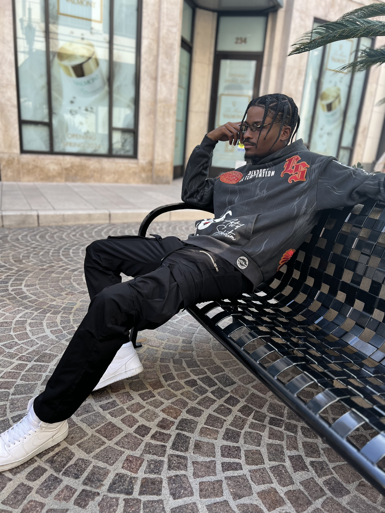
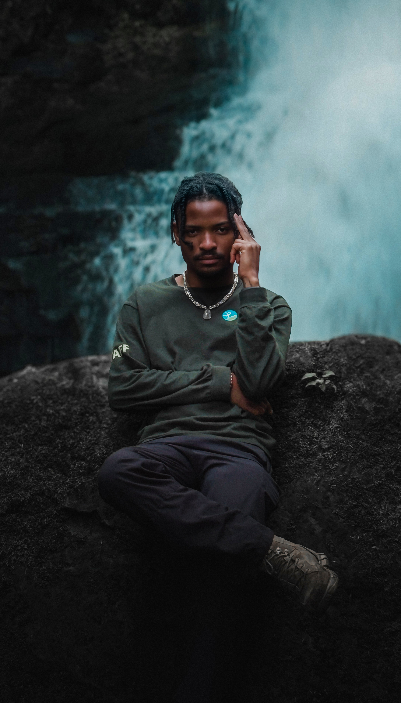

I design and build websites, web applications, and custom software.
Cavendish
About me



My story
Where
it
began
I wrote my first line of HTML when I was eight years old. The page was simple, a white background, black text, and a single sentence: “j’adore coder.” That day, I knew I’d found my calling.
At sixteen I built my first full website from scratch. No templates, no drag-and-drop; just a text editor, a browser, and the rush of seeing my code come to life. More than a decade later, that feeling hasn’t changed. I’ve spent years studying how structure, semantics, and performance shape the way people move
through a site.
This portfolio exists for one reason: to put that discipline to work for other
people. I help founders, studios, and teams turn messy ideas into clear, efficient web systems that are easy to navigate, easy to maintain, and built to grow.
Beyond the screen
When I’m not in the editor, I’m outside hiking, climbing, and spending as much
time as I can in the hills and forests. The calm and clarity I find there always
makes its way back into my work.
Fluent in four languages.
10+ years of experience.
Certified across core web disciplines.
Published author and storyteller.
FAQ
Frequently asked questions
Yes. I can review what you already have and improve the parts that need attention without rebuilding everything unless necessary.
Yes. I shape the structure, design the interface, and build the finished product so every part feels connected.
I start by defining the goal, organizing the content, and planning the pages. Clear thinking comes before code.
I work with founders, businesses, studios, and teams building something new or improving what they already have.
Send me your idea, your current website, or the problem you need solved. I’ll review it and suggest the right next step.